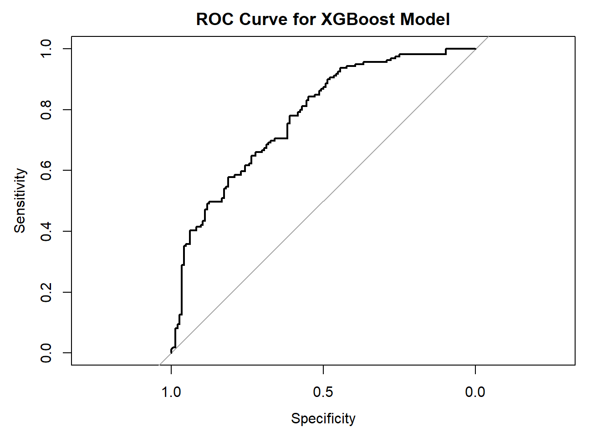
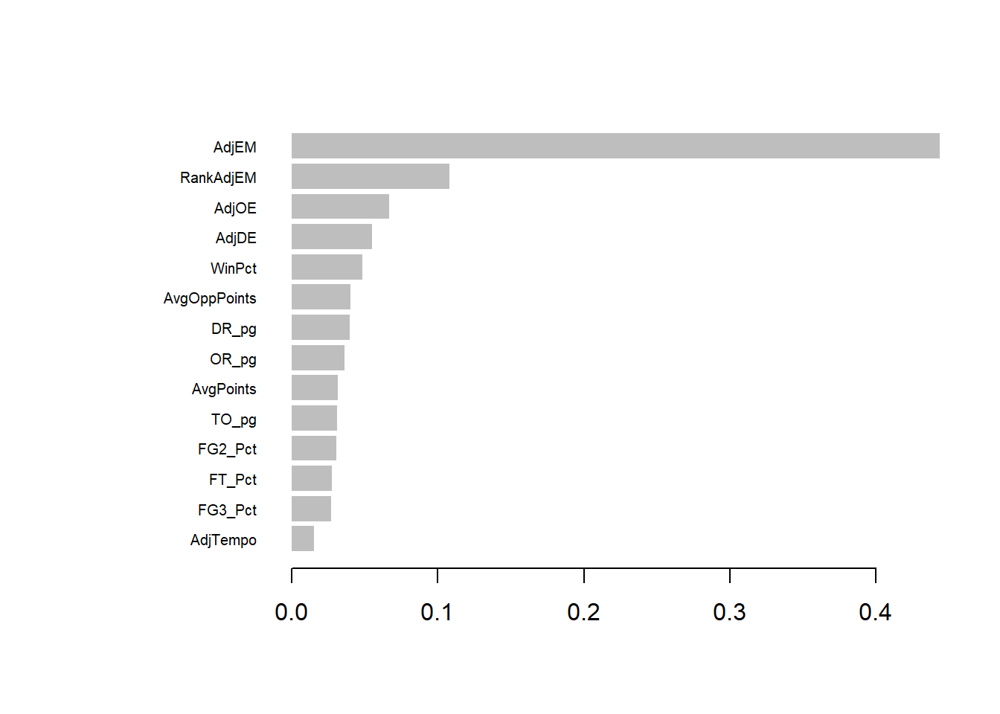

data_dir <- "."
files <- list.files(
data_dir,
pattern = "\\.csv$",
full.names = TRUE
)
data <- files %>%
set_names(tools::file_path_sans_ext(basename(.))) %>%
map(~ read_csv(.x, show_col_types = FALSE))
kenpom_final <- data$kenpom_tournament_readyMGMT362 Final Project
Introduction
March Madness is the annual NCAA Division I basketball tournament featuring 64 teams in a single-elimination format. Predicting tournament outcomes is notoriously difficult due to the large amount of variability and randomness present in college basketball games.
This project will evaluate xgboost’s ability to predict which team will win a tournament game based on a team’s season performance.
Data
Data Sources
The project uses historical NCAA basketball datasets from Kaggle’s March Madness machine learning competition.
Advanced efficiency metrics were sourced from a community-compiled KenPom dataset of historical pre-tournament data to prevent data leakage.
Loading Data
Data Preparation
Creating Team-Level Season Statistics
rs <- data$MRegularSeasonDetailedResults
team_games <- bind_rows(
rs %>%
transmute(
Season,
TeamID = WTeamID,
OpponentID = LTeamID,
Win = 1,
Points = WScore,
OppPoints = LScore,
FGM = WFGM,
FGA = WFGA,
FGM3 = WFGM3,
FGA3 = WFGA3,
FTM = WFTM,
FTA = WFTA,
OR = WOR,
DR = WDR,
TO = WTO
),
rs %>%
transmute(
Season,
TeamID = LTeamID,
OpponentID = WTeamID,
Win = 0,
Points = LScore,
OppPoints = WScore,
FGM = LFGM,
FGA = LFGA,
FGM3 = LFGM3,
FGA3 = LFGA3,
FTM = LFTM,
FTA = LFTA,
OR = LOR,
DR = LDR,
TO = LTO
)
)
team_season_stats <- team_games %>%
group_by(Season, TeamID) %>%
summarise(
Games = n(),
WinPct = mean(Win),
AvgPoints = mean(Points),
AvgOppPoints = mean(OppPoints),
FG2_Pct = sum(FGM - FGM3) / sum(FGA - FGA3),
FG3_Pct = sum(FGM3) / sum(FGA3),
FT_Pct = sum(FTM) / sum(FTA),
OR_pg = mean(OR),
DR_pg = mean(DR),
TO_pg = mean(TO),
.groups = "drop"
) %>%
filter(Season >= 2003)Joining KenPom Metrics
team_season_stats <- team_season_stats %>%
left_join(
kenpom_final %>%
select(
Season,
TeamID,
AdjEM,
AdjOE,
AdjDE,
AdjTempo,
RankAdjEM
) %>%
mutate(TeamID = as.integer(TeamID)),
by = c("Season", "TeamID")
)Summary Statistics
skim(team_season_stats)| Name | team_season_stats |
| Number of rows | 8346 |
| Number of columns | 17 |
| _______________________ | |
| Column type frequency: | |
| numeric | 17 |
| ________________________ | |
| Group variables | None |
Variable type: numeric
| skim_variable | n_missing | complete_rate | mean | sd | p0 | p25 | p50 | p75 | p100 | hist |
|---|---|---|---|---|---|---|---|---|---|---|
| Season | 0 | 1.00 | 2014.70 | 6.91 | 2003.00 | 2009.00 | 2015.00 | 2021.00 | 2026.00 | ▇▇▆▇▇ |
| TeamID | 0 | 1.00 | 1285.88 | 105.41 | 1101.00 | 1194.00 | 1285.00 | 1378.00 | 1481.00 | ▇▇▇▇▆ |
| Games | 0 | 1.00 | 29.84 | 2.79 | 4.00 | 29.00 | 30.00 | 32.00 | 36.00 | ▁▁▁▅▇ |
| WinPct | 0 | 1.00 | 0.49 | 0.19 | 0.00 | 0.36 | 0.50 | 0.63 | 1.00 | ▁▆▇▅▁ |
| AvgPoints | 0 | 1.00 | 70.01 | 5.89 | 49.24 | 66.03 | 69.97 | 73.90 | 95.55 | ▁▅▇▂▁ |
| AvgOppPoints | 0 | 1.00 | 70.22 | 5.56 | 50.43 | 66.50 | 70.14 | 73.87 | 98.21 | ▁▇▇▁▁ |
| FG2_Pct | 0 | 1.00 | 0.49 | 0.04 | 0.37 | 0.47 | 0.49 | 0.51 | 0.64 | ▁▆▇▂▁ |
| FG3_Pct | 0 | 1.00 | 0.34 | 0.03 | 0.25 | 0.32 | 0.34 | 0.36 | 0.45 | ▁▅▇▂▁ |
| FT_Pct | 0 | 1.00 | 0.70 | 0.04 | 0.54 | 0.67 | 0.70 | 0.73 | 0.83 | ▁▂▇▆▁ |
| OR_pg | 0 | 1.00 | 10.31 | 2.06 | 3.56 | 8.87 | 10.37 | 11.75 | 17.26 | ▁▅▇▃▁ |
| DR_pg | 0 | 1.00 | 23.53 | 1.99 | 15.36 | 22.19 | 23.48 | 24.82 | 31.12 | ▁▂▇▃▁ |
| TO_pg | 0 | 1.00 | 13.16 | 1.96 | 7.08 | 11.82 | 13.07 | 14.41 | 22.32 | ▁▇▇▁▁ |
| AdjEM | 408 | 0.95 | 0.09 | 12.12 | -46.27 | -8.56 | -0.70 | 8.55 | 38.92 | ▁▂▇▅▁ |
| AdjOE | 408 | 0.95 | 103.94 | 7.61 | 71.13 | 98.86 | 103.78 | 108.98 | 131.22 | ▁▂▇▅▁ |
| AdjDE | 408 | 0.95 | 103.85 | 6.60 | 81.32 | 99.32 | 104.04 | 108.58 | 126.17 | ▁▃▇▅▁ |
| AdjTempo | 408 | 0.95 | 66.27 | 3.24 | 51.07 | 64.23 | 66.28 | 68.41 | 89.22 | ▁▇▇▁▁ |
| RankAdjEM | 408 | 0.95 | 173.76 | 100.56 | 1.00 | 87.00 | 173.00 | 260.00 | 365.00 | ▇▇▇▇▆ |
Prediction Features:
WinPct= Win percentage
AvgPoints= Average points
AvgOppPoints= Average Opponent Points
FG2_Pct= two-point percentage
FG3_Pct= three-point percentage
FT_Pct= free-throw percentage
OR_pg= Offensive rebounds per game
DR_pg= Defensive rebounds per game
TO_pg= Turnovers per game
CareerTourneyWins= Coach’s historical success in previous tournaments, measured in number of NCAA tournament games won.
AdjEM= Adjusted efficiency margin, the number of points a team is expected to outscore the average D-1 team over 100 possessions
AdjOE= Adjusted offensive efficiency, points scored per 100 possessions, adjusted for opponent strength.
AdjDE= Adjusted defensive efficiency, points allowed per 100 possessions and adjusted for opponent strength.
RankAdjEM= Ranked adjusted efficiency margin, the number ranking of each team’s Adjusted efficiency margin each season
AdjTempo= Adjusted tempo, measured in possessions per 40 minutes and adjusted for opponent.
Building Matchup Dataset
Creating Tournament Matchups
tourney_games <- data$MNCAATourneyCompactResults %>%
filter(Season >= 2003)
matchup_data <- map_dfr(
1:nrow(tourney_games),
function(i) {
game <- tourney_games[i, ]
winner_first <- sample(c(TRUE, FALSE), 1)
Team1 <- ifelse(winner_first,
game$WTeamID,
game$LTeamID)
Team2 <- ifelse(winner_first,
game$LTeamID,
game$WTeamID)
Actual_Win <- ifelse(winner_first, 1, 0)
team1_stats <- team_season_stats %>%
filter(
Season == game$Season,
TeamID == Team1
)
team2_stats <- team_season_stats %>%
filter(
Season == game$Season,
TeamID == Team2
)
if(nrow(team1_stats) == 0 | nrow(team2_stats) == 0) {
return(NULL)
}
predictors <- c(
"WinPct",
"AvgPoints",
"AvgOppPoints",
"FG2_Pct",
"FG3_Pct",
"FT_Pct",
"OR_pg",
"DR_pg",
"TO_pg",
"AdjEM",
"AdjOE",
"AdjDE",
"AdjTempo",
"RankAdjEM"
)
diff_vector <- map_dbl(
predictors,
~ team1_stats[[.x]] - team2_stats[[.x]]
)
names(diff_vector) <- predictors
tibble(
Actual_Win = Actual_Win,
!!!as.list(diff_vector)
)
}
)
# matchup_data <- matchup_data %>%
# drop_na()Train/Test Split
set.seed(123)
train_index <- createDataPartition(
matchup_data$Actual_Win,
p = 0.8,
list = FALSE
)
train_data <- matchup_data[train_index, ]
test_data <- matchup_data[-train_index, ]Preparing Data for XGBoost
x_train <- train_data %>%
select(-Actual_Win) %>%
as.matrix()
y_train <- train_data$Actual_Win
x_test <- test_data %>%
select(-Actual_Win) %>%
as.matrix()
y_test <- test_data$Actual_Win
dtrain <- xgb.DMatrix(
data = x_train,
label = y_train
)
dtest <- xgb.DMatrix(
data = x_test,
label = y_test
)Training the XGBoost Model
Model Training
params <- list(
objective = "binary:logistic",
eval_metric = "auc",
max_depth = 5,
eta = 0.05,
subsample = 0.8,
colsample_bytree = 0.8
)
xgb_model <- xgb.train(
params = params,
data = dtrain,
nrounds = 200,
watchlist = list(
train = dtrain,
test = dtest
),
early_stopping_rounds = 20,
verbose = 0
)Model Evaluation
Predicted Probabilities
pred_probs <- predict(
xgb_model,
dtest
)ROC Curve
roc_obj <- roc(
response = y_test,
predictor = pred_probs
)
plot(
roc_obj,
main = "ROC Curve for XGBoost Model"
)
AUC Score
auc_value <- auc(roc_obj)
auc_valueArea under the curve: 0.7756AUC Interpretation
AUC is .7857, meaning the model correctly identifies winning and losing teams about 78.6% of the time. The model is decent at predicting win outcomes, much better than if we were to randomly guess. The score could likely be improved upon, but some amount of upsets are impossible to avoid in the NCAA tournament.
Feature Importance
Feature Importance Table
importance_matrix <- xgb.importance(
feature_names = colnames(x_train),
model = xgb_model
)
datatable(importance_matrix)Feature Importance Plot
xgb.plot.importance(importance_matrix)
Feature Importance Discussion
Adjusted efficiency margin was by far the most important prediction feature to xgboost. This makes sense, since AdjEM was one of the prediction features that adjusts for opponent strength. A team that has a decent win-rate but never played a top-tier team would have a lower AdjEM value than a team that only played good teams for the whole season and has the same win-rate.
The most important prediction feature that doesn’t adjust for opponent strength was defensive rebounds per game. This could mean that a team that has players capable of getting a defensive rebound is important overall for team strength.
The least important feature was tempo, which suggests that pace of play doesn’t significantly affect win outcomes.
Conclusion
Xgboost had moderate success at predicting win outcomes in the NCAA tournament. It is able to predict winning teams at a 78.6% accuracy.
Future improvements could include player-level statistics, injury information, or ensemble modeling approaches. Multiple prediction models could be tested at a time to compare how they perform relative to each other.
Player-level statistics and injury information would likely contain the next highest signal prediction features. To be able to know team rotations, player height, and whether or not a star-player is out of the game would be beneficial to machine learning modeling. It would be interesting to see how much higher the prediction accuracy can get.